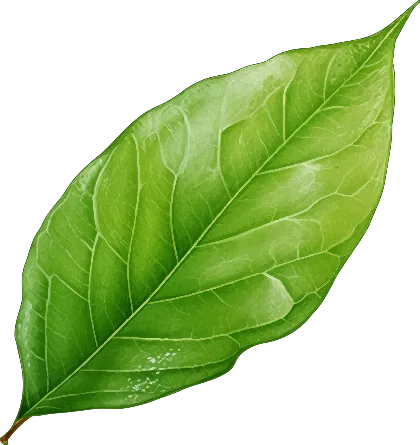
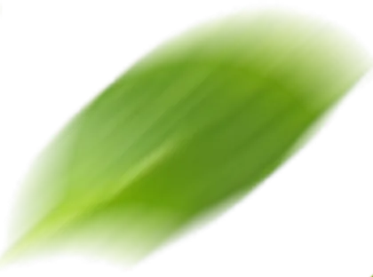
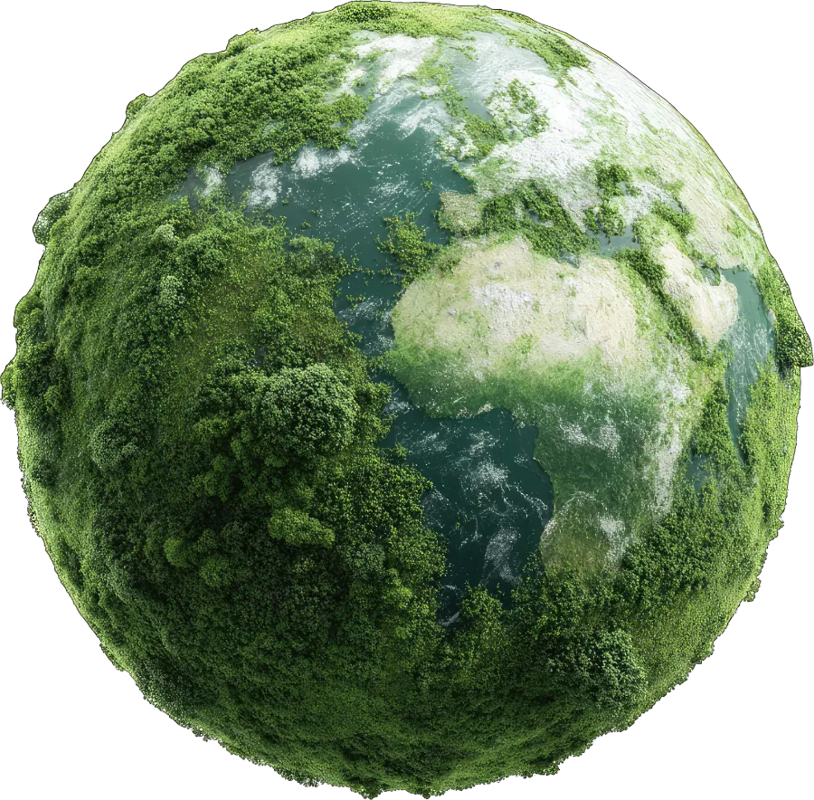
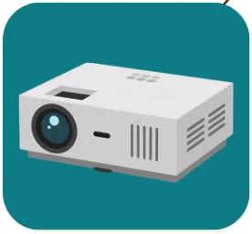
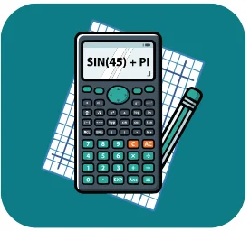
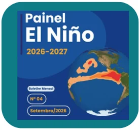
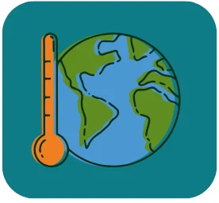

0 de 6 critérios

Práticas de Ensino de Matemática IIIProfª. Drª. Joelma Iamac Nomura
EL NIÑO
Ana Carolina, 11202021712Camila Lourenço, 11202020794Gabriel Matos, 11202321111Júlia Campos, 11202421058Kauan Franca, 11202422220
Modelagem Matemática


Visão geral do plano
Tema: Funções Exponenciais e Logarítmicas com Modelagem Matemática: investigando os impactos do El Niño nos sistemas hidrológicos brasileiros.
Público-alvo2ª série EM1ª à 3ª série do Ensino Médio
Aulas5 aulas50 min cada · 250 min
ÁreaMatemáticae suas tecnologias, em diálogo com Ciências da Natureza
MetodologiaModelagemMatemática, com dados reais do SGB
Problema central
As alterações nos níveis dos rios, nas vazões e nos volumes de chuva durante os períodos de influência do El Niño podem ser representadas matematicamente por funções exponenciais e logarítmicas? O que os dados históricos e recentes revelam sobre o comportamento das bacias hidrográficas brasileiras?
Conteúdos matemáticos
Função/Equação exponencialLog e propriedadesFunção logarítmicaInterpretação e Construção Gráfica
Objetivo geral
Desenvolver uma investigação por meio da Modelagem Matemática, utilizando dados hidrológicos reais para analisar possíveis relações entre o fenômeno El Niño e as alterações nos níveis, nas vazões e nos volumes de chuva das bacias hidrográficas brasileiras, mobilizando conhecimentos sobre funções exponenciais e logarítmicas.

Objetivos de aprendizagem
- Compreender o fenômeno El Niño e seus possíveis impactos nos sistemas hidrológicos brasileiros.
- Identificar e selecionar dados reais de precipitação, vazão e níveis dos rios.
- Organizar e representar informações por meio de tabelas e gráficos.
- Identificar padrões de crescimento, decrescimento e variação percentual.
- Investigar situações que possam ser representadas por funções exponenciais.
- Compreender o crescimento e o decaimento exponencial em situações contextualizadas.
- Aplicar propriedades dos logaritmos na interpretação de modelos matemáticos.
- Estabelecer relações entre as representações algébricas, gráficas e tabulares das funções estudadas.
- Construir e avaliar modelos matemáticos a partir dos dados coletados.
- Analisar as possibilidades e limitações dos modelos desenvolvidos.
- Desenvolver autonomia, pensamento crítico e capacidade de argumentação matemática.
● Recursos
Computadores, notebooks, tablets ou smartphones com acesso à internet.

Projetor multimídiaLousa e giz

Calculadora Científica
Boletins e relatórios do Serviço Geológico do Brasil.
Sistema de Alerta de Eventos Críticos (SACE)BNCC
Competências
Competência específica 1
Utilizar conhecimentos matemáticos para interpretar situações do cotidiano e de diferentes áreas do conhecimento.
Competência específica 2
Investigar desafios da sociedade e tomar decisões responsáveis utilizando a Matemática.
Competência específica 3
Construir e analisar modelos matemáticos para representar situações reais e avaliar seus resultados.
Competência específica 4
Utilizar diferentes representações matemáticas (gráficos, tabelas, expressões e recursos digitais) para resolver situações e comunicar resultados.
Competência específica 5
Investigar padrões, formular hipóteses e testar propriedades matemáticas utilizando diferentes estratégias e tecnologias.
BNCC
Habilidades
EM13MAT101
Interpretar situações reais por meio de gráficos e taxas de variação.
EM13MAT102
Analisar gráficos e dados estatísticos, identificando possíveis erros de interpretação.
EM13MAT304
Compreender e aplicar funções exponenciais em situações reais.
EM13MAT305
Compreender e aplicar funções logarítmicas em diferentes contextos.
EM13MAT403
Relacionar funções exponenciais e logarítmicas por meio de gráficos, tabelas e tecnologias digitais.
Metodologia
Modelagem Matemática
A proposta utiliza a Modelagem Matemática, por meio da investigação do fenômeno El Niño e seus impactos nos sistemas hidrológicos brasileiros. Escolha uma etapa:
Papel do professor
Mediador e orientador do processo investigativo, incentivando a autonomia e a participação dos estudantes.
Recursos didáticos
- Dados e boletins do SGB/SACE e CPTEC/INPE;
- Computadores ou smartphones com acesso à internet;
- Calculadoras e simuladores matemáticos;
- Projetor, gráficos e planilhas.
Cronograma
Sequência de aulas
250 minutos no total. A barra mostra o peso de cada encontro; toque numa aula para ver os detalhes.
1
Prévia das missões: exponencial e logaritmo, uma desfaz a outra
Exemplo interativo2,832^x
1,5log₂ de volta
O ponto laranja (x, bˣ) e o ponto azul (bˣ, x) são espelhos pela reta y = x: por isso o logaritmo desfaz a exponencial.
A régua do rio: cota e vazão no Rio Uruguai
Exemplo interativo · dados SGBDois registros do SGB em Uruguaiana (RS): cota 7,5 m ↔ 10.942 m³/s e cota 13,54 m ↔ 31.025 m³/s (jul/1983, El Niño forte).
Q = 10.942 · e^(0,1725·(h − 7,5))
16.470vazão (m³/s)
Inundaçãosituação na régua
Avaliação e Resultados Esperados
Marque os critérios observados em cada grupo durante a aula.
Critérios de avaliação
Resultados esperados
- Compreensão das funções periódicas a partir de fenômenos reais;
- Desenvolvimento da capacidade de interpretar e construir gráficos;
- Aproximação entre Matemática e Ciências da Natureza;
- Desenvolvimento da investigação, argumentação e pensamento crítico;
- Compreensão de que modelos matemáticos representam a realidade por aproximações e possuem limitações.
Fontes
Referências
- SACE / Serviço Geológico do Brasil (SGB/CPRM) – dados de níveis dos rios. [inserir link e data de acesso]
- [Livro didático de Matemática – autor, título, edição, ano]
- BRASIL. Base Nacional Comum Curricular. Brasília: MEC, 2018.
- [Outra referência]
OBRIGADO(A)!
Acesse pelo celular
Aponte a câmera para o código e explore os exemplos e as missões.